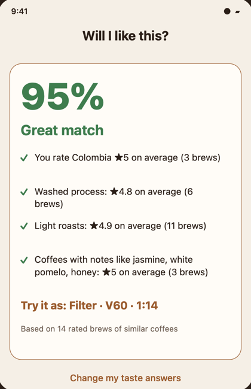

Pocketful Studio
Brew Log
Check your next bag against the coffees you already love.
Photograph a coffee bag, or enter what you know. Brew Log uses your past ratings and taste preferences to show how well that coffee matches you — with the reasons behind the result.

A match with reasons
See how you rated similar origins, processing methods, roasts and flavours. The result explains what your own history has to say.
A place to start brewing
When a similar coffee worked well for you, Brew Log can suggest a method and ratio from that highly rated brew.
Your journal makes it personal
Log your beans, recipes and honest tasting notes. Each rated cup adds context for your next coffee choice. Recommendations run on your phone; no account is needed.
Brew Log is in TestFlight while we shape it with feedback from testers.